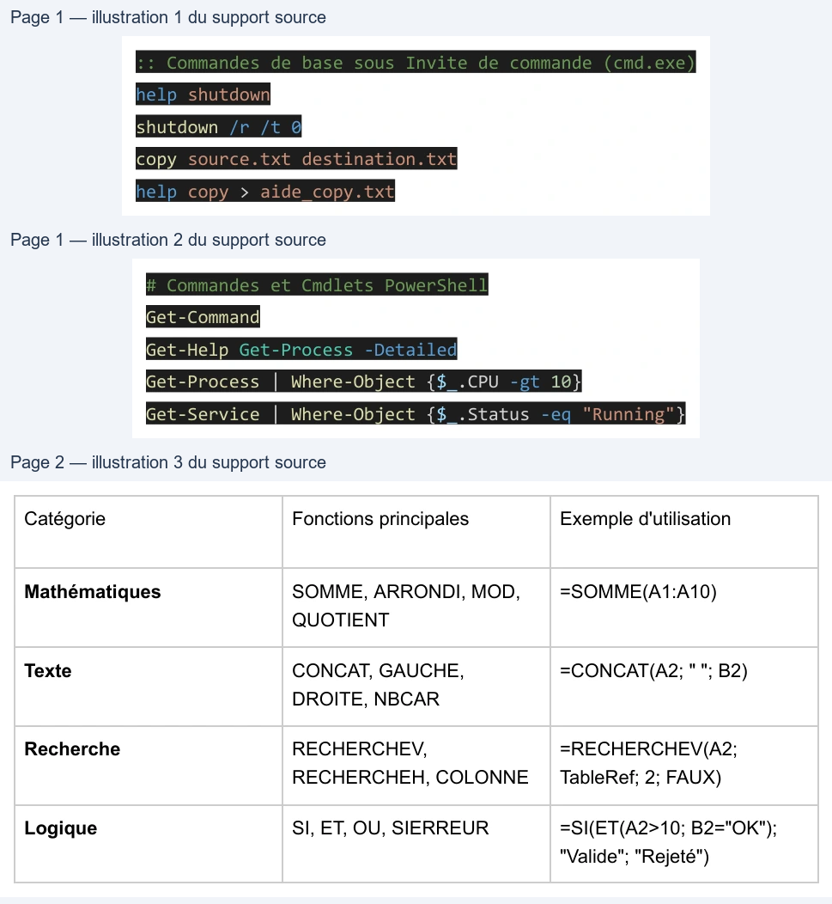

Transcription du document du Drive TSSR. La mise en forme est adaptée au Web ; les compléments IA du portail sont présentés séparément.
Windows 10 propose plusieurs interfaces pour l'administration et l'interaction avec le système :
● Interface Graphique (GUI) : Bureau, Panneau de configuration, Paramètres Windows,
Consoles MMC (mmc.exe).
● Invite de commande (cmd.exe) : Shell historique hérité de MS-DOS pour l'exécution
d'outils système et de scripts batch (.bat / .cmd).
● PowerShell : Shell moderne orienté objet basé sur .NET, permettant d'automatiser les
tâches complexes d'administration.
Exemples de commandes essentielles pour interagir avec le système :
:: Commandes de base sous Invite de commande (cmd.exe)
help shutdown
shutdown /r /t 0
copy source.txt destination.txt
help copy > aide_copy.txt
# Commandes et Cmdlets PowerShell
Get-Command
Get-Help Get-Process -Detailed
Get-Process | Where-Object {$_.CPU -gt 10}
Get-Service | Where-Object {$_.Status -eq "Running"}
Le module couvre également les fonctionnalités de calcul et d'analyse dans Excel pour l'aide au
pilotage informatique :
Catégorie
Fonctions principales
Exemple d'utilisation
=SOMME(A1:A10)
Mathématiques
SOMME, ARRONDI, MOD,
QUOTIENT
=CONCAT(A2; " "; B2)
Texte
CONCAT, GAUCHE,
DROITE, NBCAR
Recherche
RECHERCHEV,
RECHERCHEH, COLONNE
=RECHERCHEV(A2;
TableRef; 2; FAUX)
Logique
SI, ET, OU, SIERREUR
=SI(ET(A2>10; B2="OK");
"Valide"; "Rejeté")
| Catégorie | Fonctions principales | Exemple d'utilisation |
| Mathématiques | SOMME ARRONDI MOD , , , QUOTIENT | =SOMME(A1:A10) |
| Texte | CONCAT GAUCHE , , DROITE NBCAR , | =CONCAT(A2; " "; B2) |
| Recherche | RECHERCHEV , RECHERCHEH COLONNE , | =RECHERCHEV(A2; TableRef; 2; FAUX) |
| Logique | SI ET OU SIERREUR , , , | =SI(ET(A2>10; B2="OK"); "Valide"; "Rejeté") |
